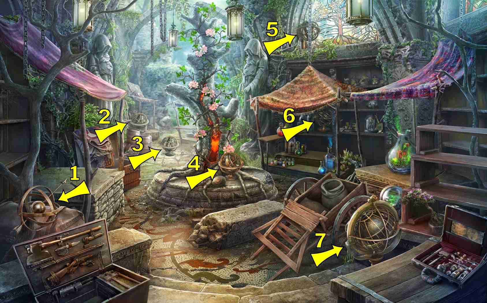
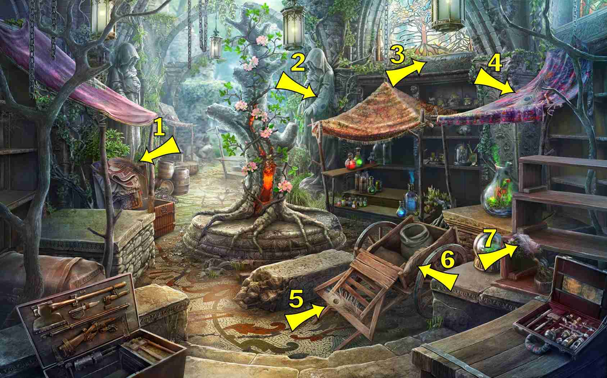
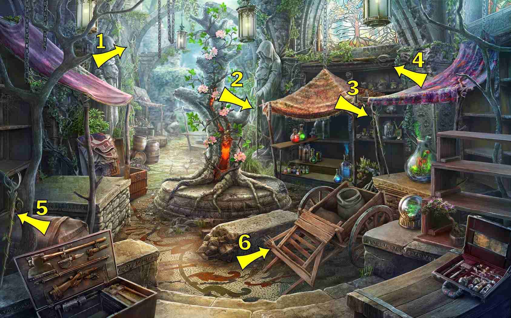
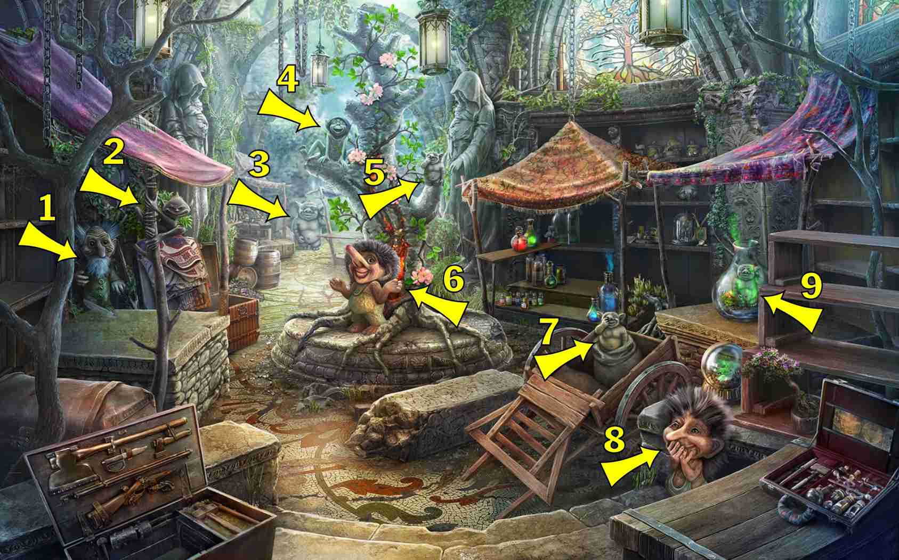
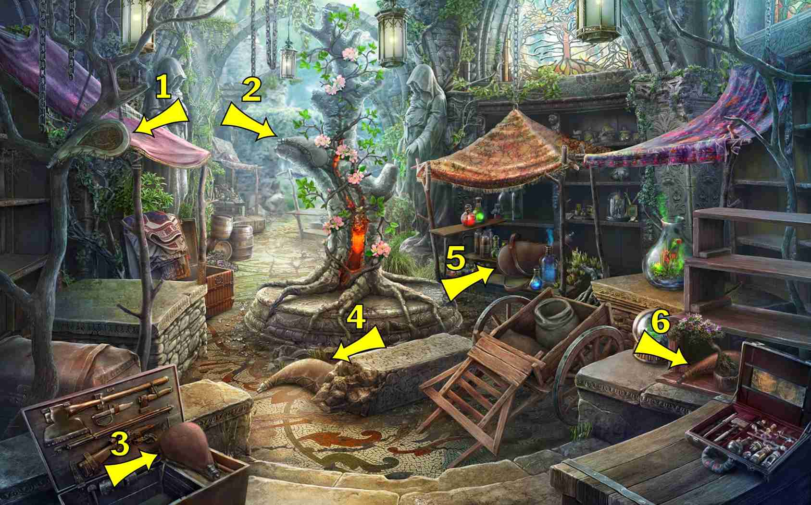
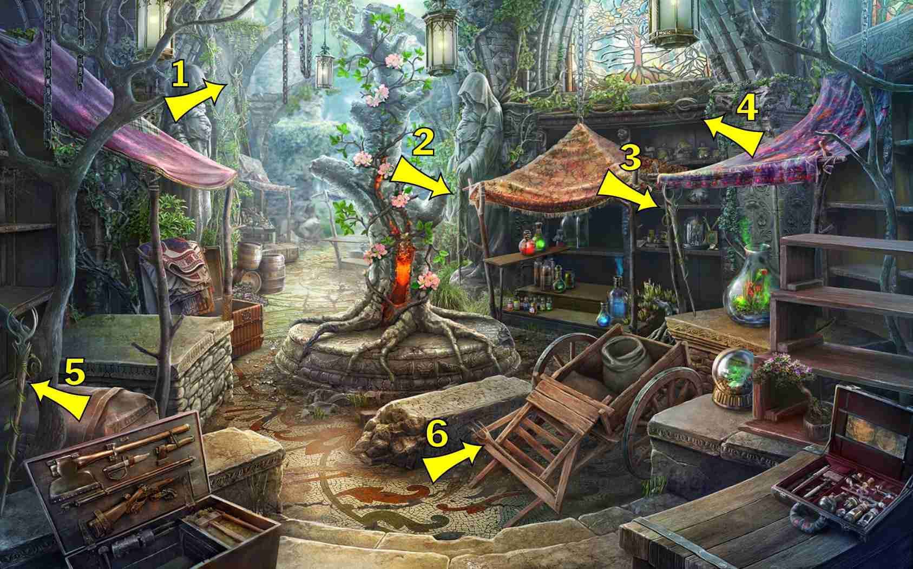
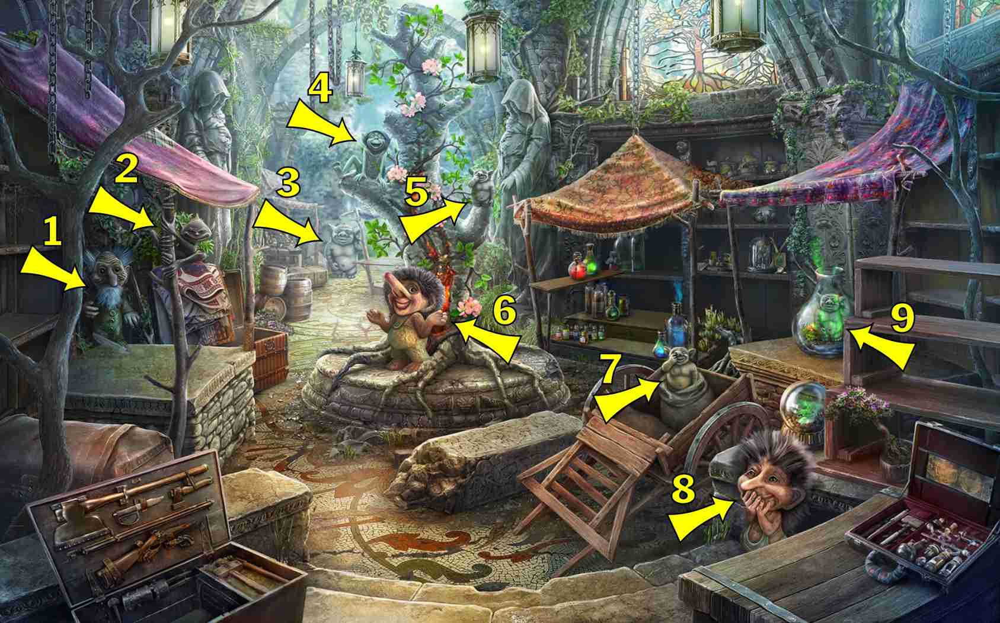
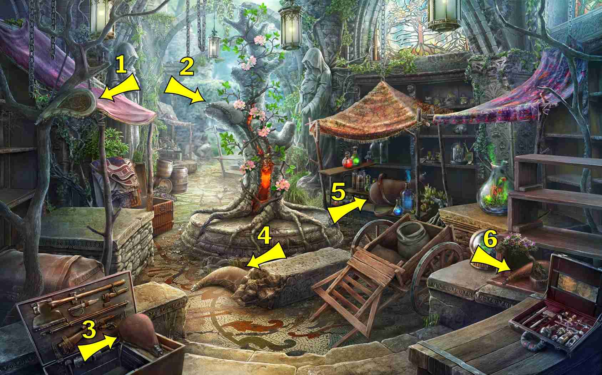

8 items:
- At the bottom left of the stone stairs, to the right of it

5 items:
- On barrels to right of left hand stall - gold
- Near top of central tree - red


5 items:
- On vertical support of left market stall (partially hidden)
- At left of support of central tree
- On the central hanged lantern
- Top right
 




